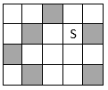

Có một khu vườn hình chữ nhật kích thước n x m ô vuông (n dòng, m cột). Ta đánh số các dòng từ 1 đến n theo chiều từ trên xuống dưới, các cột từ 1 đến m theo chiều từ trái qua phải. Tại những ô vuông là đất bình thường người ta trồng rau. Tuy nhiên có một số ô là đá nên không trồng rau được. Có một chú ốc sên tại ô (y, x), y là vị trí dòng, x là vị trí cột. Từ một ô, chú ốc sên chỉ có thể di chuyển sang 4 ô liền kề (y-1, x), (y+1, x), (y, x-1), (y, x+1). Nếu gặp ô đá thì ốc sên không đi vào được.

Ốc sên đang rất đói. Bạn hãy xác định xem chú có thể ăn được số lượng rau nhiều nhất là bao nhiêu.
Dữ liệu vào: gồm các dòng sau:
- Dòng thứ nhất gồm bốn số nguyên n, m, y, x, mỗi số các nhau một khoảng trắng (1 ≤ y ≤ n ≤ 100,1 ≤ x ≤ m ≤ 100).
- Trong n dòng tiếp theo, mỗi dòng gồm m số nguyên 0 hoặc 1 biểu thị vườn rau, mỗi số cách nhau một khoảng trắng. Số 0 nghĩa là ô rau, còn số 1 nghĩa là ô đá.
(Dữ liệu cho đảm bảo ô (y, x) là ô rau)
Dữ liệu xuất:
- Là một số nguyên xác định số lượng ô lớn nhất mà ốc sên có thể di chuyển đến.